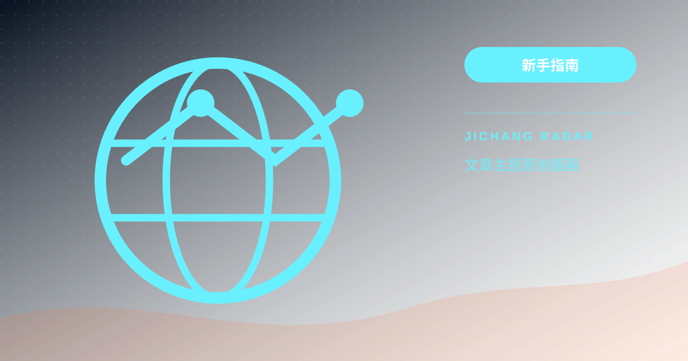
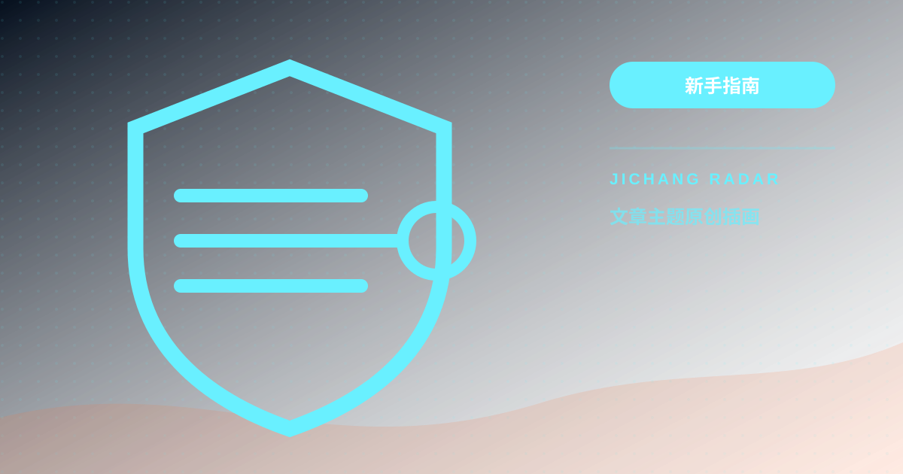
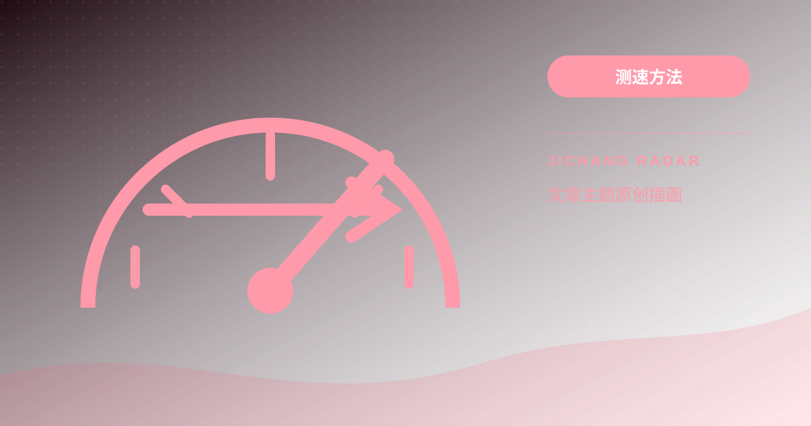
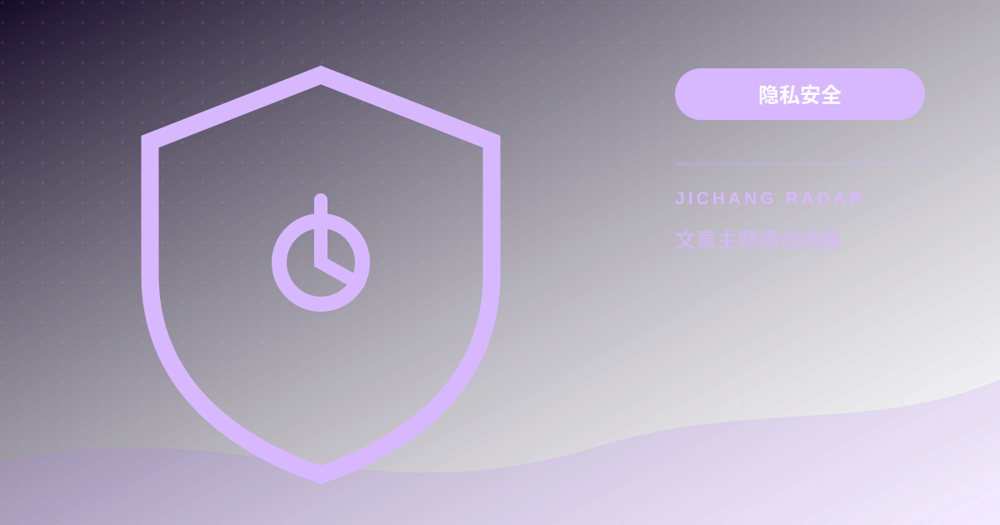
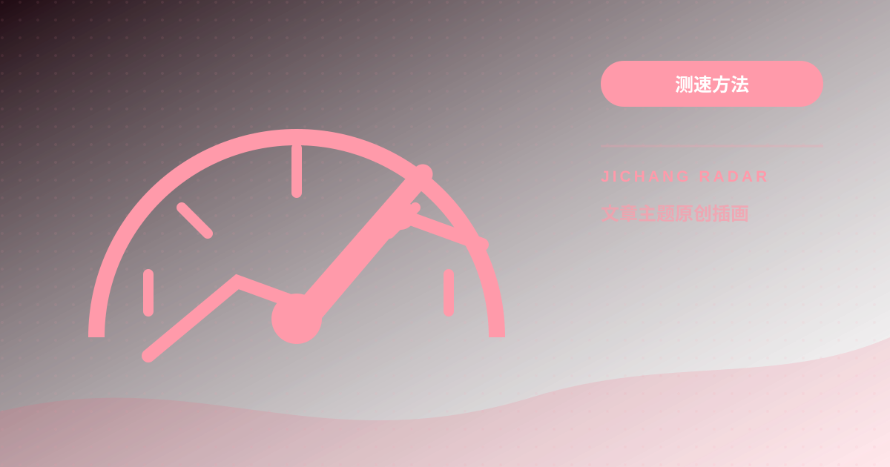
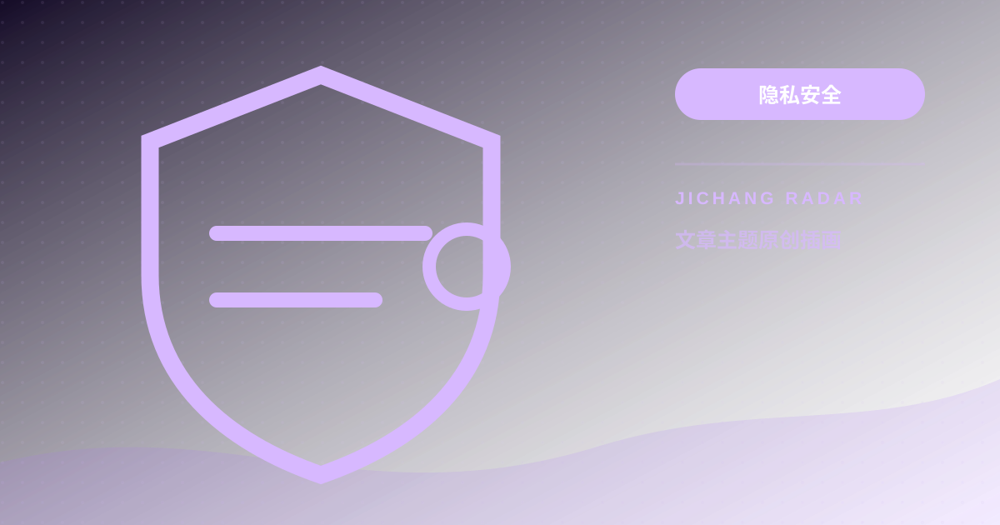
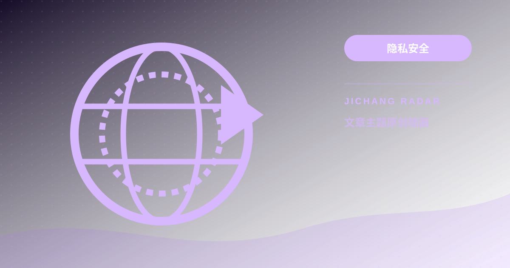

新手指南012026 稳定好用机场推荐：按预算与场景分级的年度网络加速节点选型指南
2026 年度稳定好用机场节点选型指南：从 ¥15/月基础实用到旗舰级 IEPL 专线，按月付预算、外贸办公、4K 影音与 AI 开发场景细分阶梯推荐模型，客观对比网络抖动、带宽倍率与晚高峰抗拥塞能力。
继续阅读 →
新手指南012026 年度稳定好用机场节点选型指南：从 ¥15/月基础实用到旗舰级 IEPL 专线，按月付预算、外贸办公、4K 影音与 AI 开发场景细分阶梯推荐模型，客观对比网络抖动、带宽倍率与晚高峰抗拥塞能力。
继续阅读 →
新手指南02解析网络加速工具单点故障成因，详解如何通过“主备异构”策略构建 99.9% SLA 双机场高可用容灾方案。对比物理内网专线与协议级备用链路，提供客户端自动测速回退与特殊时期抗封锁的实操选型指南。
继续阅读 →
测速方法03深度剖析中国电信（163/CN2）、中国联通（169/9929/CUG）、中国移动（CMI）及广电宽带在国际出口与跨网互联结算（Peering）上的物理瓶颈。详解移动跨网直连高延迟与丢包成因，提供四大运营商加速节点选型匹配模型与实战避坑指南。
继续阅读 →一次测速只是快照。我们更看晚高峰、丢包和故障恢复。
工具能做什么、不能做什么，以及使用前该知道的隐私代价。
每个排错结论都拆成普通人能逐项验证的检查点。

隐私安全04深度揭秘网络节点服务商后端的真实窥探能力，解析纯内存服务器架构（RAM-Only）与透明无日志审计的底层技术防线。对比分析无日志节点与普通商用机房的数据留存差异，提供识别假零日志与防范数据记录泄露的实操选型指南。
继续阅读 →
测速方法05本文通过 MTR 与 NextTrace 双向路由追踪实测，深度剖析晚高峰骨干网拥塞、ICMP假低延时与去回程路由不对称机制，提供3条诊断命令排查节点真实丢包。
继续阅读 →
隐私安全06深度审计在线订阅转换 API 拦截节点 Token、WebRTC 穿透暴露公网真实 IPv6 及本地运营商 DNS 污染三大安全隐患，提供 Docker 本地私有化部署与抓包防护实操。
继续阅读 →
隐私安全07本文深入解析审查防火墙针对自签名证书的主动探测机制，解密 VLESS Reality 借壳大厂真实 SNI 证书与回落拟态原理，并提供多协议实测性能对比与伪装域名选型指南。
继续阅读 → 新手指南08
新手指南08 小火箭09
小火箭09